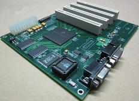

The first time I learned of atomic force microscope (AFM) was during my first year of my undergraduate studies. I was looking for a research project, and firstly I contacted a few labs at the physics department. But all I could hear was that no lab would take an undergraduate student by policy. Later I found that it was kind of implicit agreement among professors that none of them would take any undergrad into their labs because they thought it as preoccupying students by skipping a formal procedure of admitting graduate students and hire their students among the pool. I thought, and still think, it was an absurd policy, but there was nothing I can do about it. So I decided to start my own project with friends, and while browsing through Physics Today to find a topic of a project I found an article about atomic force microscopy, probably this article. The article was quite interesting and clear that I misleadingly thought that building an AFM would be easy enough to be a good a project for freshmen. Of course I was totally wrong. We could not even get the necessary equipments and ingredients, letting alone building one. That was my first bittersweet experience with atomic force microscopy.
Then a few years later, when I was looking for a company to work for my alternative service after the meltdown of the team at the first company I had worked for a year, I came to contact with PSIA (now Park Systems), a company developing and building commercial AFMs. I had known the company before the job search, because one of my friends contacted PSIA to get some material to build an AFM when we were trying to do our own research project. But I did not know that they were hiring people for alternative service (as I wrote in this post a company should be registered by the Ministry of National Defense to be able to hire alternative service employees). I don't remember how I found that out and whom at the company I contacted to. I went through an interview, got a position there fortunately, and moved to the new position in October 2004.
I was very thrilled for the new position for two reasons. First, the main product of this company is AFM, which aligns more closely with my major, physics. I already made my mind at that time that I will study theoretical physics, especially string theory, after my alternative service, so working with AFMs was not exactly the physics I was hoping to do, but still the idea of working with AFMs was quite exciting compared to projects that are not related to physics. Secondly, I was told that the project I would work on was porting an operating system (OS) to a new AFM controller system, and that was exactly what I wanted to work on. That is, working at the interface between hardware and software of AFM, so that I can learn both aspects of a system.
Again I was quite lucky because the members at my team were very smart and had great knowledge on electronics and programming: many of them were majoring or had majored in engineering like EE and CS, and some were physics majors with lots of experiences in software and electronics. Also, there was no nasty character in the team (well, there were a few interesting people, but all were good-meaning), so it was very pleasant to work in the team.
How AFM works
Before going into the projects that I worked on at PSIA, let me first briefly describe how an AFM works, probably focusing more on the AFM I had worked with.
The idea is quite simple: AFM measures the topography of a sample by scanning a nanoscale tip attached to the end of a microscale cantilever sample against the surface of the sample and then reading out the movement of the cantilever. To measure the movement, the top of the cantilever is mirror-coated and a laser beam is focused onto the mirror surface, and along the path of the reflected laser beam a photodiodes is installed to convert the displacement of the light signal into an electric signal. The movements of the cantilever and the sample stage are controlled by piezoelectric elements, which turns an electric field into a mechanical force and vice versa. For more detail, see this wikipedia page about AFM.
The photodiode, the sample stage, and the cantilever are hooked up to an electronic controller that forms a feedback loop. To scan a sample as fast as possible, the electronics should operate with the least amount of the feedback latency, which was the main project I worked on during my time at PSIA.
Under the hood of an OS kernel
The first project that I worked on when I started working at PSIA was porting NetBSD, an open-source, Unix-like operating system, to the electronic system and developing any device driver required for it.


Before this project, the AFM was controlled by a digital signal processor (DSP), which was not only taking care of the feedback loop but also the other general tasks that a DSP was not designed for and therefore reduced the performance of the whole system. To make the electric feedback loop to operate faster, a standalone system was being developed when I moved to PSIA to take care of all the tasks except the feedback loop, which the DSP was planned to focus on by working as one of the devices of the system.
Our team was developing the system based on Motorola Sandpoint reference platform. According to the wiki page of NetBSD/sandpoint, the system is "a reference platform designed by Motorola to help people develop hardware and software around various PowerPC processors. The basic system is an ATX form-factor motherboard with standard PC devices (IDE, floppy, serial, parallel), 4 PCI slots, and a mezzanine slot to which several different processor modules may be attached."
The plan was attaching the DSP to the CPU via PCI for speed and throughput, and the system will connect to a user via USB. The electronic system was designed before I joined the team, so I do not know what lies behind the decisions and in what order the decisions are made, and at this point I feel curious about a few points.
First, was it the Motorola PowerPC CPU that was chosen as the centerpiece of the system and then were the reference system and the OS to port chosen? Or was the Sandpoint reference system chosen for the design of the electronics system and then the rest followed? My guess is that actually NetBSD was chosen as the OS to run the system and then the Sandpoint reference system with a PowerPC CPU were selected, and the reason is the leader of my team was deeply in love with NetBSD. There was nothing wrong about it, I also think NetBSD is a lovely OS for a custom-built system as it focuses on portability. The only issue was that PSIA wanted to have Linux as the OS to put on the new electronics system, largely because the sales team thought Linux sounded more sellable to customers. And it seemed that there was an effort in running Linux on the system prior to my joining the team, because there was a broken code of Linux device driver for the system when I started working on the project that I was able to use as a reference. Because of the conflict of the preferences, my team pushed the project without announcing that actually we were working on NetBSD rather than Linux until after the point where the project was almost completed so that the decision could not be reversed.
Another question is the decision of using USB 1.0 for the interface between the AFM electronics system and a user computer to transfer data between the two. Because USB 1.0 was not so fast, especially compared to PCI between the CPU and the DSP, it was evident from the beginning that it would be the bottleneck. It seemed more natural to me to use an Ethernet connection. Not only it was much faster than USB 1.0, there would have been less work in developing the device driver for the interface. But on the other hand I can understood why such a decision was made, which was pushed largely by the sales team: to someone who does not know much about computer systems, connecting a device using a USB cable makes more sense than installing an additional Ethernet card to a user computer and then getting the right Ethernet cable to hook up the AFM to the computer. Also a USB cables looks fancier than an Ethernet cable, whose plastic clip is notoriously fragile. Nowadays USB got much faster so probably the decision was a right one in retrospect in the long run. Around the end of the project, USB 2.0 became available and we discussed whether to introduce it to the system. We dropped the idea after finding out that it would require quite an amount of additional work on the device driver side because USB 2.0 interface has its own microprocessor to control the much faster data transfer on the same old physical interface.
So my task was basically making NetBSD run on the newly built system. It's a pity that I do not have any record of my work during that period. I remember giving a presentation about how the ported version of NetBSD worked on the system in front of everyone at PSIA to provide an overview, and for that event I even drew a few pretty diagrams. All that were lost when my computer and backup hard drive were broken down many years ago. Amusingly, while I was searching through the internet to remind myself of what I was doing during that time period, I found two threads in the NetBSD mailing list for Sandpoint systems that I started! One was about NFS mounting, where I discovered a boot-up message of the system that I copy-pasted to the thread that contains quite a few details of the system. (Kudos to myself of two decades ago.)
Copyright (c) 1996, 1997, 1998, 1999, 2000, 2001, 2002, 2003
The NetBSD Foundation, Inc. All rights reserved.
Copyright (c) 1982, 1986, 1989, 1991, 1993
The Regents of the University of California. All rights reserved.
NetBSD 1.6.2 (XEPRO-$Revision: 1.2 $) #1: Mon Jan 31 17:43:58 KST 2005
phygeeks%netbsd.psia.co.kr@localhost:/home/phygeeks/netbsd/src/sys/arch/sandpoint/comp
ile/XEPRO
total memory = 128 MB
avail memory = 115 MB
using 1664 buffers containing 6656 KB of memory
mainbus0 (root)
cpu0 at mainbus0: 8245 (Revision 0.4), ID 0 (primary)
cpu0: HID0 90c000<DOZE,DPM,ICE,DCE>
pci0 at mainbus0 bus 0
pci0: i/o space, memory space enabled
pchb0 at pci0 dev 0 function 0
pchb0: Motorola MPC8245 Host Bridge (rev. 0x12)
tdsp0 at pci0 dev 16 function 0: Texas Instruments TMS320C6415 DSP, rev 1
tdsp0: interrupting at irq 0
tdsp0: emifb config addr=0x280000 val=0x1270c
tdsp0: emifb config addr=0x280018 val=0x62117000
tdsp0: emifb config addr=0x28001c val=0x25e6600
tdsp0: emifb config addr=0x280008 val=0xffffff1f
tdsp0: emifb config addr=0x280004 val=0xffffff1f
tdsp0: emifb config addr=0x280010 val=0x90
tdsp0: emifb config addr=0x280014 val=0x90
tdsp0: emifb config addr=0x280048 val=0x47
tdsp0: emifb config addr=0x280044 val=0x47
tdsp0: emifb config addr=0x280050 val=0x47
tdsp0: emifb config addr=0x280054 val=0x47
tdsp intr before src = 00000880 mask = 00000008 hsr = 00000004
rstsrc = 00000023
tdsp intr after src = 00000000 mask = 00000008 hsr = 00000004
rstsrc = 00000020
fxp0 at pci0 dev 17 function 0: i82550 Ethernet, rev 16
fxp0: interrupting at irq 1
fxp0: Ethernet address 00:03:47:97:d0:89
inphy0 at fxp0 phy 1: i82555 10/100 media interface, rev. 4
inphy0: 10baseT, 10baseT-FDX, 100baseTX, 100baseTX-FDX, auto
eumb0 at mainbus0
com0 at eumb0 base=0xfc004500 irq=20: ns16550a, working fifo
com0: console
lbus0 at mainbus0 cpld ver. 2.0
usbn0 at lbus0 base=0xe00000 irq=4 rev A
biomask 0 netmask 3 ttymask 3
boot device: <unknown>
root on fxp0
nfs_boot: trying RARP (and RPC/bootparam)
nfs_boot: client_addr=211.240.96.118 (RARP from 211.240.96.99)
nfs_boot: server_addr=211.240.96.99
nfs_boot: hostname=xepro
nfs_boot: gateway=211.240.96.1
nfs_boot: my_mask=255.255.255.128
root on netbsd.psia.co.kr:/usr/cross/xepro/root
We can see that the system was running on Motorola PowerPC MPC8245, with Texas Instruments TMS320C6415 DSP attached to it via PCI and with a handful of memory, 128 MB. It had a few connections: Ethernet, USB, and a serial port.
In the mailing thread I was asking a question about how to mount a network file system (NFS) to the system. The system did not have any storage, i.e. a hard disk, attached to it, which is reasonable considering that it is just a electronic controller system of an AFM, but it made my life hard when debugging the system. So I wanted to hook up a file system remotely via the Ethernet connection and I had difficult to make it work when I posted the question. Sadly though, I couldn't get any answer for the question from the community, although I remember somehow I made it and even was able to compile C codes on the system using gcc to build small test programs.
The second question I posted to the mailing list was about NetBSD's support on removable flash ROM for bootstrapping the CPU for the kernel boot-up. A CPU is like a knight in a shining armor: it is powerful and can do many things, but because of all the weight of the armor it requires some help in putting itself up to the saddle (but a bit of web searching shows a few claim that this hoisting a knight onto a horse is a myth; I do not have any expertise on the topic of medieval equestrian tech), and the prep is done by a small program called a bootloader, which is typically written on a ROM, a bootrom. My first subproject was studying both the boot sequence of the MPC8245 from the thick user manual and also reverse-engineer a bootloader binary into a C code. This gave me an impression that modern day electronics are much like a Swiss mechanical watch movement but use silicon and electrons instead of metal and gears. I am not saying this not in a pejorative sense at all, I rather came to admire both of them in how they work and how people have designed such amazing gadgets.

The bootloader was "burned" onto an erasable programmable ROM (EPROM) and then was installed on the system, and there was a discussion around the end of the project whether to replace the EPROM with an SD card, so that PSIA can distribute an update of the bootloader via a form of an SD card instead of an ugly-looking EPROM.

Again this was not at all about functionality but was about marketing and sales, so everyone in the team was not much thrilled to the idea. Anyway, I was investigating the possibility of developing a device driver for the SD card interface when I was asking the question in the thread. Fortunately I got a few responses from the developer community compared to the zero response for the previous question, but in the end the idea of using an SD card was killed, much to my joy.
NetBSD was a wonderful OS in the sense that almost all the necessary building blocks for our system was there, I just needed to understand how to put all the pieces together around the kernel of NetBSD and then build a program to run as a daemon process to transfer data from AFM via DSP to the CPU and then from the CPU to the user computer via USB. It was quite a fun project to work on as it provided me an opportunity to take a glimpse of how an OS kernel works and also to read good C codes that gave me an idea that a good code should explain itself without too many comments.
Spring constant of cantilevers
So much so about the first project. After wrapping it up, I was out of company for four weeks due to a basic military training, which was not a pleasant way to celebrate the end of a project but was a good deadline because there was no way to postpone the training.
With all the sunburn I got from the training, I returned to the company to find out that there was another project waiting for me, and this looked even more fun. It was about measuring the spring constant of an AFM cantilever and developing a prototype of a module for the task. This involved a basic physics of Hooke's law, but however basic it was, I liked that idea of getting back to a physics experiment after being away from the university for about two years.
It was necessary to measure the spring constant of a cantilever to calculate the force exerted by the cantilever from the displacement of the tip of the cantilever, which in turn could be used to understand the material properties of the sample being pushed and/or pulled by the cantilever.
One basic method of obtaining a spring constant of a cantilever is measuring the thermal noise in the signal of the deflected laser beam off from the cantilever. If we assume that a cantilever is an ideal spring with one degree of freedom, when it is in the room temperature it gets thermal energy from the atmosphere (the AFM is neither cooled nor in a vacuum). By measuring the amplitude of the thermal oscillation of the cantilever, we can calculate the spring constant as
where \(k_\text{B}\) is the Boltzmann constant, \(T\) is the temperature, and \(\langle x^2 \rangle\) is the mean square of the amplitude of the thermal oscillation of a cantilever. In reality a cantilever is not an ideal spring, therefore to get a more precise estimation we need to get the physical dimensions (length, width, thickness, etc) of a cantilever and its material properties (like Young's modulus) to build a mechanical model of the cantilever and then obtain a formula for the spring constant, see this nice summary on the web.
In practice what is needed is to measure the signal from the photodiodes with a cantilever hung in the air, run a Fourier transform of the signal to get the power spectrum of the signal, which will display a nice peak around the resonance frequency of the cantilever, and estimate the amplitude from the data. This requires a good analog-to-digital converter (ADC) to read out the electric signal from the photodiodes, and that is what had been lacked before in the sense that there was no commercially available ADC with a reasonable price tag. But that had changed around that time, and we were able to get a hand on National Instrument (NI) data acquisition module and it did its job. I also enjoyed doing some hardware programming with NI Measurement Studio library for Visual C++, which showed me the usefulness of C++ library in distributing commercial libraries.
The thermal calibration method is useful because it just requires an ADC and a bit of modeling and programming to get a spring constant of any cantilever installed on an AFM, but it has a not-so-small error of about 10%. So there had been much research about easy but more accurate calibration methods, and at that time PSIA was able to collaborate with National Physics Laboratory in the UK (which is the UK counterpart of NIST) to get a micro-fabricated array of reference springs.
The idea is again simple. There is an array of springs with known spring constants. Each spring is attached to a platform so that a cantilever can be pushed onto the platform. When there is still a traveling distance remaining in the spring, the cantilever and the spring will act like two springs connected in series. After the spring is pushed down to the bottom, there is no contribution from the spring, therefore there is a discontinuity in the displacement signal of the cantilever. By measuring the slopes before and after the discontinuity and using the spring constant of the reference spring, we can calculate the spring constant of a cantilever, typically with 5% accuracy. For more detail see [1]. The spring array was of the scale of micrometers and was made of silicon. They were surprisingly robust enough to be shipped from the UK to PSIA in Korea via post mail with just a bubble wrap around it. But I was clumsy enough to break 5 out of 10 springs by dropping it onto the floor. At that time I was working with a guy from a quality control (QC) team and he was taking care of measuring spring constants using the arrays while I was developing a thermal calibration module, and if I were him I would have been quite mad toward a brat who came into my room and broke half of crucial instruments by just being not careful enough. But he did not show any hostility toward me for my carelessness. I was really thankful for him and we remained good friends.
But the spring arrays were not commercially available at that time, so what we did was to compare a thermal calibration against the result from using a spring array and see if we could get a reasonable result. Actually they agreed within the expected error, so we declared victory and started shipping an additional module for a thermal calibration.
Epilogue
After the two projects, it was already the time that I finished my civilian service. Although I could continue working at the company, which many other people at PSIA on the same service did, I decided to go back to my undergraduate study. There was always an option of working as a part-time until graduation and then come back to the company, but I made my mind at that time that I would study string theory in a graduate school. I indeed made it to a graduate school and did my Ph.D. studies on string theory. Was it fortunate or unfortunate? It's hard to tell. But at least I enjoyed my time doing research in string theory, as I enjoyed my various projects at Softwise and at PSIA during my years of alternative civilian service.
References
| [1] | http://stacks.iop.org/Nano/14/1279 |
Comments
comments powered by Disqus